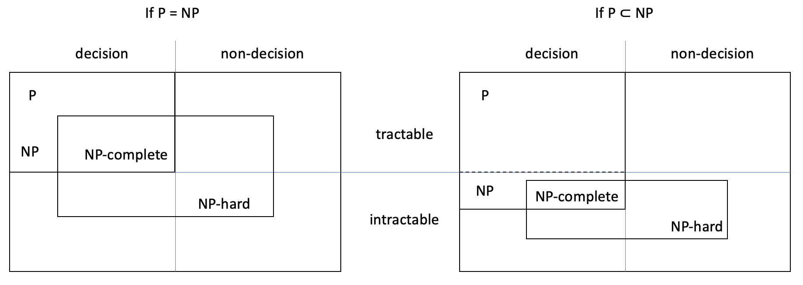

26.4. Problem hardness
So far we used reduction to obtain an algorithm for an unsolved problem, given an algorithm for an already-solved problem. This section shows how reduction can be used to classify problems.
26.4.1. Comparing problems
By reducing problem A to problem B, we obtain an algorithm for A: it transforms the inputs, uses the most efficient algorithm for B and transforms the output. So, the complexity of problem A is at most the sum of the complexities of the input and output transformations and of problem B. (Remember that the complexity of a problem is the complexity of the most efficient algorithm that solves it.)
We say ‘at most’ because there could be a more efficient algorithm for A, possibly without using reduction. For example, the reduction of the interval scheduling to the maximal independent set problem shows that the complexity of the former is at most exponential, and in fact there’s a far more efficient greedy algorithm.
We say that problem A is at most as hard as problem B, and B is at least as hard as A, if A can be reduced to B with two polynomial transformation algorithms.
All examples in the previous section use polynomial-time transformations, so finding the median is at most as hard as sorting, finding the minimum or maximum is at most as hard as selecting the n-th smallest value, and the interval scheduling problem is at most as hard as the maximal independent set problem.
Intuitively, A being at most as hard as B means that
either A is as hard as B (both are tractable or both are intractable)
or A is less hard than B (A is tractable and B is intractable).
This only happens if both transformations take polynomial time. If at least one transformation takes longer than polynomial time, then even if B is tractable, the complexity of the reduction algorithm for A is non-polynomial and A could be intractable (if no algorithm that is more efficient exists).
To sum up, if one or both transformations are non-polynomial it’s possible for A to be harder than B (A is intractable and B is tractable). With polynomial transformations, A is always at most as hard as B.
If A reduces in polynomial time to B and B is tractable, then so is A, because A can’t be harder than B. More precisely, A is tractable because the sum of the polynomial complexities of the transformations and of the algorithm for B is polynomial. This is our first example of how reduction helps classify problems.
Note: If problem A reduces in polynomial time to a tractable problem, then A is tractable too.
26.4.2. Transitivity
Before I introduce the final two complexity classes, we must realise that reduction is transitive: if problem A reduces to problem B, and B reduces to problem C, then A reduces to C. The reason is simple: if we can transform A’s inputs into B’s and B’s inputs into C’s, then we can just write one transformation algorithm after the other to transform A’s inputs directly into C’s, and similarly for the output transformations.
The next figure shows that. The top diagram shows A being reduced to B, which is reduced to C, while the bottom diagram shows the direct reduction of A to C. Algorithms \(\mathrm{IT}_\mathrm{A} + \mathrm{IT}_\mathrm{B}\) and \(\mathrm{OT}_\mathrm{C} + \mathrm{OT}_\mathrm{B}\) are the concatenation of the input and of the output transformation algorithms.
Note: If A reduces to B and B reduces to C, then A reduces to C. If the reductions of A to B and of B to C take polynomial time, so does the reduction of A to C.
26.4.3. The NP-hard class
In 1971, Stephen Cook proved something extraordinary: any decision problem in NP can be reduced in polynomial time to SAT, the satisfiability problem. This means that, by definition, SAT is at least as hard as every NP problem. Problems that are as hard as every problem in NP are called NP-hard.
At the moment, no polynomial algorithm for SAT is known, but there’s no proof that it can’t exist. Imagine that someone finds a polynomial algorithm for SAT, thus proving that SAT is tractable. We saw earlier that if a problem A reduces in polynomial time to a tractable problem, then A must be tractable. So, since every NP problem reduces in polynomial time to SAT, if SAT turns out to be tractable, then every NP problem is tractable: NP = P. That’s why I wrote in Section 26.2.4 that SAT binds classes P and NP: to prove that P = NP you only have to find a polynomial algorithm for SAT.
SAT was the first NP-hard problem to be found, but many others exist. Imagine that an NP-hard problem A reduces in polynomial time to problem B. Since any NP problem reduces in polynomial time to A, because A is NP-hard, then by transitivity of reduction it also reduces in polynomial time to B. Well, if there’s a polynomial-time reduction from each NP problem to B, then B is NP-hard by definition. We have just proved the following statement.
Note: If an NP-hard problem A reduces in polynomial time to problem B, then B is NP-hard too.
This is the second example of using reduction to classify problems. Starting from SAT and using polynomial-time reductions, computer scientists have proven many problems to be NP-hard. I’ll list a few in Section 26.5.1. The earlier argument of why a polynomial algorithm for SAT proves that NP = P can be applied to any other NP-hard problem.
Note: If someone finds a polynomial algorithm for one NP-hard problem, then NP = P.
26.4.4. The NP-complete class
An NP-hard problem is at least as hard as any NP problem, so it may not be in the NP class. When a problem is both NP-hard and in NP, the problem is NP-complete.
SAT is NP-complete because it is NP-hard (as proven by Stephen Cook) and in NP (as shown before). Another NP-complete problem is the decision TSP. We’ve seen it’s in NP, but the proof that it’s NP-hard will be omitted.
The NP-complete problems are the hardest problems in NP, because they are at least as hard as every other NP problem.
One striking property of NP-complete problems is that they all reduce in polynomial time to each other. The reason for this is as follows. Consider any two NP-complete problems A and B, i.e. both are in NP and NP-hard. Since A is in NP and B is NP-hard, there’s a polynomial-time reduction of A to B, by definition of NP-hardness. However, since B is in NP and A is NP-hard, there’s also a polynomial-time reduction of B to A. So any two NP-complete problems reduce in polynomial time to each other. In a sense, all NP-complete problems are the same problem.
26.4.5. P versus NP
To conclude this section, let’s see how the NP-hard and NP-complete classes fit with the other classes under both scenarios: P = NP and P ≠ NP. Here’s a diagram showing the class relations.
In both cases, due to the definition of NP-completeness, the NP-complete class is the intersection of the NP and NP-hard classes.
The NP-hard class also includes non-decision problems because it has been proven that the travelling salesman problem and many other problems that don’t have Boolean outputs are NP-hard.
We’ve seen earlier that if any one NP-hard problem is tractable, then all NP problems are tractable too. So when P ≠ NP (right-hand diagram), all NP-hard problems must be intractable, because otherwise we’d have NP = P. Since the NP-complete problems are a subset of the NP-hard problems, they must be intractable too when P ≠ NP.